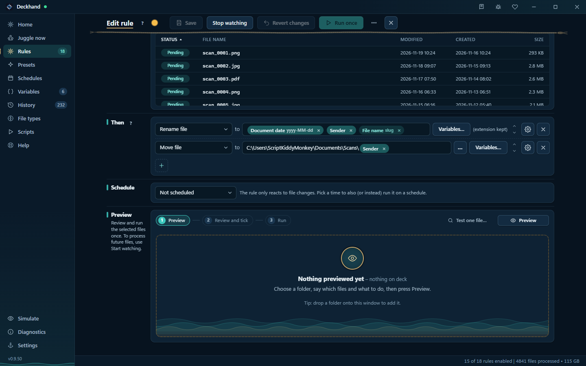
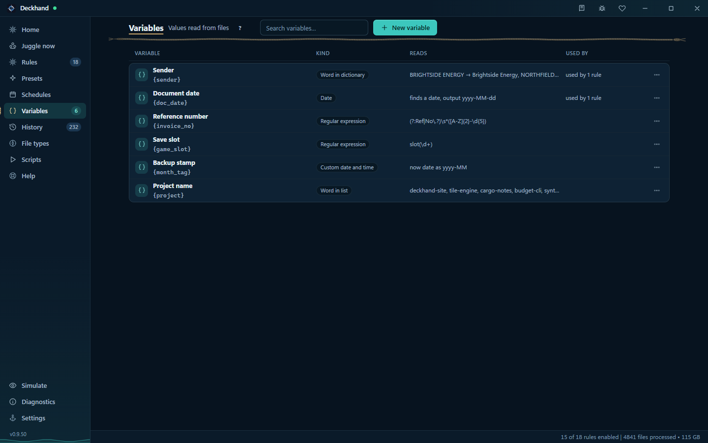

Variables and transforms
Put values read from a file into folder names, file names, messages and commands.
Put {name} in a folder, a file name, a message or a command to use something read from the file. For example {year} or {filename}. The { } button in a text box lists what is available.
The next screenshot is the Then section of the rule Scans: read the sender and name the file. The Rename file action builds the new name from three variable chips, Document date yyyy-MM-dd, Sender and File name slug. The Move file action puts the file in a folder named after the Sender.


Template syntax
| Write | Result |
|---|---|
{modified:yyyy-MM} | The value with a format, here 2026-11 |
{client|Unknown} | The value, or Unknown when there is none |
{image.taken:yyyy|@modified:yyyy} | The date taken, otherwise the modified year. A fallback starting with @ names another variable. |
{modified+7d:yyyy-MM} | Date math: add or subtract N minutes, hours, days, weeks, months or years (m h d w mo y) |
{client>upper} | A transform. Chain them: {client>trim>upper} |
{{ and }} | A literal brace |
Order inside a token is: name, date math, :format, |fallbacks, then >transforms. Put the format on every part of a fallback chain. An unknown {name} is an error.
Date formats
Date formats use .NET patterns: yyyy, yy, MMMM, MMM, MM, dddd, ddd, dd, HH, hh, mm, ss, tt, and literal text in single quotes.
Built-in variables
| Group | Variables |
|---|---|
| Name and place | name (without extension), ext, filename, path, folder_name, folder_path |
| Size and type | size (bytes), type, type.category, type.subtype, type.group |
| Dates | created, modified, accessed, now |
| Contents | contents (File contents: text of any supported file, OCR for pictures and scans) |
| Hashes | hash.md5, hash.sha1, hash.sha256 |
pdf.title, pdf.subject, pdf.keywords, pdf.author, pdf.creator, pdf.producer, pdf.created, pdf.modified | |
| Audio | audio.artist, audio.album, audio.album_artist, audio.title, audio.genre, audio.track, audio.disc, audio.year, audio.duration |
| Pictures | image.make, image.model, image.camera, image.width, image.height, image.megapixels, image.taken, image.latitude, image.longitude |
PDF, audio and picture variables are empty for other kinds of file.
There is one contents variable. How it reads a file (OCR, PDF in columns) is set in the gear of the condition or variable that uses it. See File contents. The old contents.columns variable is gone from the list, and older rules that use it keep working.
Your own variables
The Variables page lets you define values pulled from a file's text or from another variable. The screenshot shows six variables of five kinds: a dictionary (Sender), a date (Document date), two regular expressions (Reference number, Save slot), a custom date (Backup stamp) and a word list (Project name).


| Kind | What it finds |
|---|---|
| Word list | The first listed word found (wildcards allowed) |
| Dictionary | A result for the first search text found, for example "payroll" gives "HR" |
| Regular expression | The first match, or its first capture group |
| Pattern | A match built from parts such as digits, words and literal text, for example Invoice No: followed by digits |
| Date | The first date in the text, with a day-month-year order and output format |
| Custom date | The file's created, modified or accessed date, or now, with a format you choose |
Open a variable to edit it. The next screenshot is the dictionary variable Sender. Its Find column holds the text to look for in the file (for example BRIGHTSIDE ENERGY) and its Return column the clean name to use. Look in says where to search. File contents (text) is the default, and then the gear next to it opens the same reading options as a condition.

The gear next to Look in sets how the file's text is read for this variable: Read text from images and scanned PDFs (OCR) (on by default), Read PDF in columns (column by column), and Show what Deckhand reads from a file.... The gear only appears while Look in is File contents.

Pick from a sample helps with a regular expression: choose a file, select the value with the mouse and press Use selection. Deckhand builds the expression from the words in front of it. Add more samples to check that the expression finds the right thing in each.
Transforms
| Transform | Effect |
|---|---|
upper, lower, title | Change case |
trim, collapse | Remove outer spaces, or squeeze repeated spaces |
replace:find:with | Replace text |
regex:pattern:replacement | Regular-expression replace, with $1 for groups |
substr:start:length, left:n, right:n | Take part of the text |
pad:width[:char], padright:width[:char] | Pad to a width |
slug, sanitize | Make URL-friendly text, or remove characters not allowed in file names |
digits, word:n | Keep digits only, or the Nth word |
remove:text, prefix:text, suffix:text | Remove, add before, add after |
Escape a colon, a > or a backslash inside a transform argument with a backslash. Transforms also apply to the fallback: {client|UNKNOWN>upper}.
When a value is missing
If a variable has no value and no fallback, the action can skip the file, use a fallback, or mark the file as a problem. See Actions and conflicts.